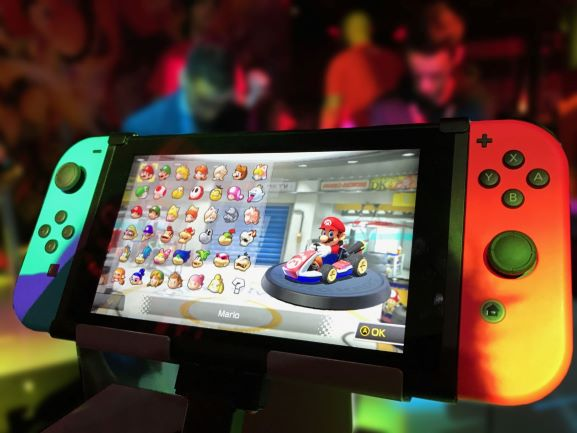
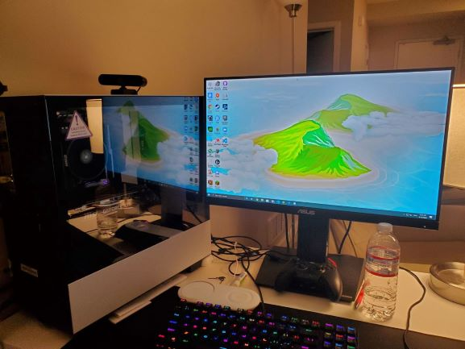

I started playing video games went I was around 5 years old, my mom at that time own a Ciber Cafe a place where people could go and rent a computer to work in the school projects they had so there was time between customer went I could use the computers to play game on the navigator, those were very basic games but really fun because they offer a challenge and some could be really hard to complete because at the time the most games on online weedsides did not have any way to wave your progress so I have to completed the games in one play sesion, today I on my own pc that I build to play games but there is many ways to play video games today.

The first thing you want to know if want to play videogames is which game do you want to play, there are many different types of video games out there but there is a general consensus that videogames can be divided in different categories for example if you like Mario Bros those games are generally consider a platform games and you can look for more similar games and you can find games like Sonny or try new and interesting ideas in the same platform games genre like Celeste.So if you are not sure try to think about a game you used you play to went you were younger or try to see if you a game on your phone that you like and you would probably find more games that you like many for the way play them or for their story.
Today many people play games on their phones and those game have been getting better with the years but is your are looking for a more complete experience you may consider buy a console to play videogames its is important to know that playing on your phone is not a terrible choice if you like the games the have there but very often companies release there big games on their own platform so people buy they console, if you want to buy a console to play it is very important to look at the games you like some games may be exclusive of one devise and other may release on the other years later.
There are 5 main types of ways to play videogames today there is your phone thats is probably the cheapest and most convenient with hundreds of games releasing every day but sadly many games are of a really bad quality and other just seen to want to take as much money as they can from you so many people end expending more on mobile games than others that have consoles or PCs to play,If you like the Mario games it may be a good idea to start with a Nintendo switch, but if you prefer a different style of games one that has usually more mature stories or like playing sports games like FIFA or NBA2K a playstation or an Xbox may be better for you and if you want to experience those games with better graphics and more options a Pc may be best for you it all depends on how much money you have or want to expend and what games you want to play.
